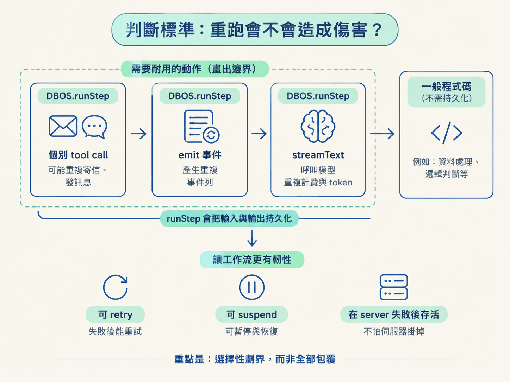
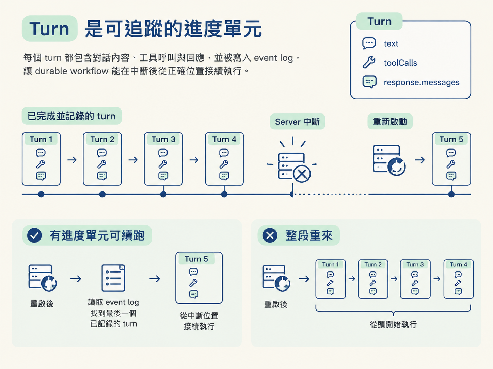

如果 agent 在重啟後從頭跑一次，哪些動作只是多做一次計算，哪些動作卻會真的造成傷害？寄信、發訊息、寫事件和呼叫模型，都不能只靠「希望它不要重跑」來保護。
這一步要做的事很明確：找出需要持久化的動作，把工具執行從 AI SDK 手上收回來，再讓 workflow 負責包住這些動作。最後，你會得到可追蹤的 ToolCall 與 Turn 型別，讓每一回合的進度有固定形狀。
裝好 DBOS 後，很容易產生另一個誘惑：把所有程式都包進 durable step。但持久化不是免費的；每多包一個 step，就多一份執行紀錄與簿記。
所以先用一個尖銳的問題篩選：
如果這段程式因為重啟而再跑一次，會不會造成傷害？
用這個問題掃過現有 runtime，三個候選動作的邊界就很清楚：
| 動作 | 重跑會發生什麼 | 該不該包 |
|---|---|---|
| 個別 tool call | 工具真的執行第二次，可能寄出兩封信或發出兩條訊息 | 該，各自一個 step |
| emit 事件 | bus 已經把資料寫進資料庫，重跑會產生重複的事件列 | 該，避免重複資料列 |
| streamText 呼叫模型 | 模型被呼叫第二次，多燒一輪費用與 token | 該，避免重複計費 |
DBOS 的機制是：包在 DBOS.runStep 裡的程式，其輸入與輸出都會被持久化。這讓它可以 retry、suspend，也能在 server 失敗後繼續存活。
因此，將上面三種動作各自包成 step，再把 step 串起來，就形成一個 workflow（工作流）。這不是把所有東西都套上一層保護，而是在程式裡畫出「哪些動作必須耐用」的界線。

Vercel AI SDK 的預設行為很方便：只要工具提供 execute 函式，SDK 就會自動執行它。
但這正是 durable workflow 的問題。工具一旦由 SDK 直接跑完，workflow 就沒有機會在工具執行外層包上 DBOS.runStep。重啟時，工具可能再次執行，寄信或發訊息等副作用也可能再次發生。
所以要先拿回控制權：刪掉每個工具的 execute 欄位。刪掉後，工具只保留名稱與 schema 等描述；SDK 可以提出工具呼叫，但不會替你執行。
工具不再由 SDK 自動執行後，建立一個集中入口，依照工具名稱把呼叫導回原本的 mock 邏輯：
export async function runTool(name: string, args: unknown) {
switch (name) {
case "searchKB":
return searchKB(args as SearchKBArgs);
case "classify":
return classify(args as ClassifyArgs);
// ...其他工具
default:
throw new Error(`Unknown tool: ${name}`);
}
}集中成一個 runTool，有兩個直接的好處。
第一是控制權。工具真正執行的位置變成你自己的程式碼，外層才能包 durable step，也才能留下審計軌跡。
第二是可獨立匯出。runTool 所在的檔案不需要 import DBOS，因此仍然是可重用的工具邏輯，而不是被某個 workflow 綁死的執行模組。
接下來容易犯的錯，是把 DBOS.runStep 直接寫進 tools 檔案。正確位置是在 workflow 裡「呼叫 runTool 的地方」包住它。
原因在於，持久化是 workflow 的責任，不是工具本身的責任。如果 tools 檔案 import DBOS，純邏輯模組就會依賴執行引擎，之後想在其他地方重用會受到限制。
把包裝放在呼叫端，還能讓所有 step 集中在同一個 workflow 裡。這比把 durable 邏輯散落在各個工具檔案中更容易檢查，也更容易掌握整個 workflow 的執行邊界。
這其實是在做一個模組邊界判斷：工具負責描述與執行邏輯，workflow 負責耐用性與持久化。
當工具執行不再由 AI SDK 自動完成，就需要自己描述「模型要求執行哪個工具、帶了哪些參數」。先定義 ToolCall：
type ToolCall = {
toolCallId: string;
toolName: string;
inputs: unknown;
};
type Turn = {
text: string;
toolCalls: ToolCall[];
response: { messages: Message[] };
};ToolCall 有三個欄位：
toolCallId：把工具請求與後續結果配對起來的關聯鍵。toolName：要執行的工具名稱。inputs：傳給工具的參數。Turn 描述一次 model 呼叫產生的結果。這個回合可能要求執行工具，也可能已經產生完成的答案；同時，它保留回傳的 response.messages。
把 turn 當成可追蹤的單位，是因為它正好能成為 durable workflow 的進度單元。當 turn 被記進 event log，workflow 重啟後就能知道上一回合走到哪裡，從中斷的位置接續，而不是整段從頭開始。

現在你可以用三個規則檢查 runtime：
DBOS.runStep。execute，讓 workflow 而不是 AI SDK 掌握執行時機。接下來，workflow 就能用 ToolCall 表示要執行什麼，用 Turn 記住每次 model 呼叫的進度；下一步再把 model turn 與 tool call 抽成真正可以套進 step 的函式。